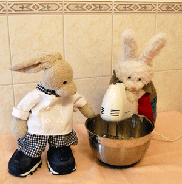

Time to get mixing!

Place flour in a large bowl. Work the Crisco shortening into flour with your hands until crumbs are the size of peas. Add buttermilk, stir with your hands just until flour is moistened.
P.S. if you like to eat biscuit dough like me, make sure to wash your hands in between each process...